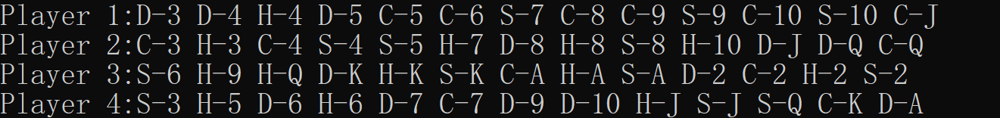
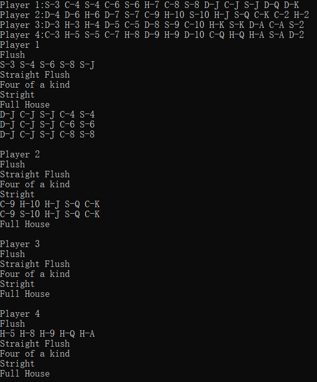

class Card
{
private:
string suit;//char*和string的区别？
string rank;
int v_suit;
int v_rank;
public:
Card(string suit, string rank);//带两个参数的构造函数
Card();
int get_v_rank();
int get_v_suit();
void show();//打印单张纸牌
bool is_null();
bool operator==(Card);
bool operator!=(Card);
bool operator > (Card);
bool operator < (Card);
};
定义了带有两个参数的构造函数，同时在初始化Card类的对象时利用map函数去 记录每中每种花色以及牌型的int值大小。利用运算符重载实现单张牌的大小比较。
class Player
{
private:
Card cards[14];//选手总共手牌，最后一个位置留给last_card指针
int null_card;//选手第一张空牌的位置（即最后一张牌之后的位置）
int num;
//必须手动添加默认的初始构造函数，否则会在此处报错
public:
//初始化
bool push_card(Card);
void show(); //展示玩家所有手牌
//void sort();
Player();
void check_null_card();
Card* get_cards();
int get_null_card();
int get_num();
//出牌
};
每个Player类有14张card，其中最后一张恒为空。Player类还包含一个指向第一张空纸牌的指针，在发牌(shuffle)的时候维护指针即可知道下一张牌发到哪里。
其中get_cards()方法（返回player第一张牌的地址）没有必要，不如写成Card get_card(int i)，直接返回该玩家第i张牌，没有必要使用指针调用。
class Game
{
private:
Player players[4];
public:
//Game();
//void ini();
void shuffle();
//void sort();
Player get_player(int);
void show();
void show_game_poker_hands();
void show_ddz();
};
主要功能是发牌和展示。其中发牌从小到大依次发牌即可，不用之后再利用排序算法改变牌的顺序。

class Poker_Hands
{
private:
Player player;
Player D_cards;
Player C_cards;
Player H_cards;
Player S_cards;
int card_num[16];
public:
Poker_Hands(Player);
void search_flush(Player);
void search_straight_flush(Player);
void show_flush();
void show_straight();
void show_full_house();
void show_four_of_a_kind();
void show_straight_flush();
void show_poker_hands();
};
